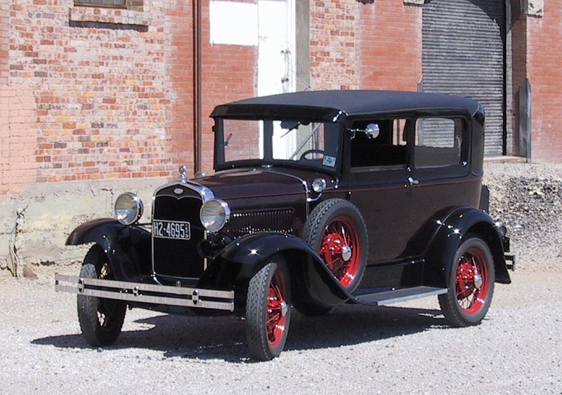
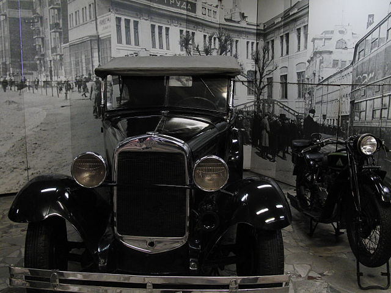
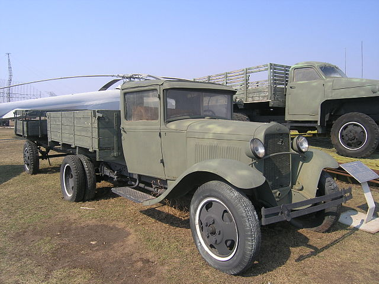
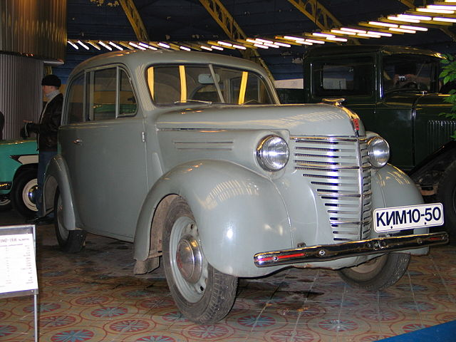
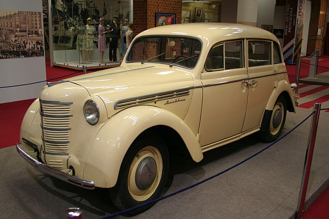

Свою діяльність завод почав в листопаді 1930 року, приступивши до збирання легкових і вантажних автомобілів Ford.
До 1933 р. Завод випускав автомобілі FORD-A і FORD-AA з імпортованих деталей.

Ford A
У грудні 1930 ухвалою Всесоюзного автотракторного об'єднання завод почав іменуватися "Державний автоскладальний завод імені Комуністичного Інтернаціоналу Молоді КІМ.
З 1932 року завод переходить на збирання автомобілів ГАЗ-А і ГАЗ-АА з деталей, які надходили з Горького.

ГАЗ А

ГАЗ AA
У 1933 році завод став філією ГАЗ. У 1939 році завод стає самостійною частиною Глававтопрому, і отримує назву Московський автомобільний завод імені КІМ. В цьому ж році збірку вантажівок припинили і переорієнтувались на виробництво малолітражних автомобілів. В цей час спеціально під потужності заводу, розробляється малолітражний автомобіль КІМ-10.
У 1940 році завод почав виробництво цієї моделі. Паралельно розроблені модифікації КІМ-10-51 кабріолет і КІМ-10-52 — чотиридверний седан. З початком Німецько-радянської війни завод переорієнтовується на військову продукцію.

КІМ 10-50
У травні 1945 року прийнята Ухвала Ради Міністрів СРСР про розгортання будівництва автозаводу з випуску малолітражних автомобілів «Москвич». Завод був перейменований в Московський завод малолітражних автомобілів МЗМА.
У 1947 році, розпочато серійний випуск легкових автомобілів Москвич-400. Ця модель була розроблена на основі автомобіля Opel Kadett зразка 1938 року і випускалася частково на трофейному німецькому устаткуванні. У 1948 році, почалося виробництво фургона, а в 1949 і кабріолета на базі Москвич-400. В 1954 році побачив світ модернізований автомобіль Москвич-401.

Москвич 400